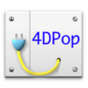
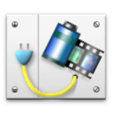
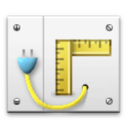
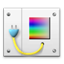
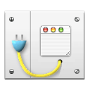

|  | Este componente instala una paleta en el entorno Diseño. Esta paleta se enriquece gradualmente con herramientas a medida que se instalan componentes compatibles. |
| 1. | Cree una carpeta "Components" junto al archivo de estructura de su base (".4db") |
| 2. | Ubique la carpeta "4DPop.4dbase" o un alias de esta carpeta en la carpeta "Components". |
| 3. | Abra su base. |
| 4. | En el método de base "On Startup Database Method", digite "Install 4DPop" luego la tecla tabulación. El código de la paleta 4DPop se inserta automáticamente en el método.
|
| 5. | Reabra la base, la paleta aparece en la esquina inferior izquierda de la pantalla en modo Diseño. |
*En Macintosh el componente es un paquete cuya extensión ".4dbase" no es necesariamente visible en función de los ajustes de sus preferencias de visualización.
La ayuda de 4DPop está disponible en el menú Ayuda o haciendo clic en el icono "i" de la paleta
La paleta se muestra en la esquina inferior izquierda de la pantalla en modo Diseño. Si la paleta está cerrada, puede abrirla halando la flecha indicadora.

Si hace doble clic en la flecha indicadora de la paleta cuando está cerrada, se abrirá y ajustará su tamaño al número de herramientas presentes. Al hacer doble clic en la flecha indicadora de la paleta abierta se cerrará.
Si no está instalado ningún componente compatible, la paleta abierta mostrará la siguiente imagen:
Si uno o varios componentes están instalados, aparecerán como botones.
Puede mover la paleta haciendo clic en la barra de título, ubicarla a la derecha o a la izquierda de la pantalla. La posición de la paleta es memorizada.
Un menú contextual es accesible en la barra de título de la paleta. Toma nuevamente todas las herramientas cargadas y algunas opciones de visualización de la paleta.
Los componentes se cargan en orden alfabético: para forzar un componente a cargarse primero (a la izquierda) puede colocarle un prefijo al archivo por ejemplo "01".
Coloque uno o más componentes compatibles* o alias en la carpeta "Components" de su base y reiníciela para acceder a las nuevas herramientas disponibles en la paleta.
Los componentes disponibles son:
4DPop Bookmarks |
Organice los marcadores que utiliza a diario: URL, archivos, carpetas, emails... Administre su lista de favoritos con arrastrar y soltar. |
4DPop Constants Editor |
Cree y publique sus propios conjuntos de constantes personalizadas, en un editor dedicado. Utilícelas inmediatamente en sus métodos 4D. |
 4DPop Image buddy |
Administre todas las imágenes de su carpeta Resources de la aplicación. Puede fácilmente seleccionar, duplicar y transformar sus imágenes, vistas previas y arrastrarlas a sus formularios o aplicaciones y utilizar las herramientas de importación para convertir recursos PICT o CICN en PNGs. |
4DPop Migration |
Migre cuidadosamente sus aplicaciones a 4D v11 SQL manteniendo el control de todos los recursos de la aplicación, transformando sus antiguas constantes personalizadas 4DK# al nuevo formato de constantes 4D v11 SQL. ¡Haga lo mismo con sus macros! |
4DPop Commands |
Acceda rápidamente a la documentación de los comandos 4D y arrastre y suelte comandos (¡Y sus parámetros!) al editor de métodos. |
 4DPop Rulers |
Cree todas las guías que quiera, poniendo reglas horizontales y verticales en su espacio de trabajo. Visualice su aplicación en la pantalla de sus usuarios finales sin tener que cambiar sus preferencias. |
 4DPop Color Chart |
Elija con precisión los colores de fondo y primer plano de todos sus proyectos de una gran cantidad de paletas profesionales (RGB, HSL, etc.) y genere el código fuente correspondiente simplemente arrastrándolo y soltándolo en sus métodos. |
 4DPop sqlSchemas 4DPop sqlSchemas |
Defina gráficamente los esquemas SQL utilizados para conexiones SQL externas (ODBC, SQL Pass trough, 4D for Flex, etc.). Los esquemas se aplican cuando se define el método de base On sql authenticate. |
 4DPop Window |
Tome control de múltiples ventanas a través de un menú jerárquico. Puede visualizar a la vez todas las ventanas del modo Diseño y del modo Aplicación y reorganizar sus ventanas y administrar sus dependencias (un método de objeto depende de un formulario, por ejemplo). Recupere ventanas perdidas después de un cambio de resolución y mucho más... |
4DPop XLIFF |
Utilice 4D como un verdadero editor de localización para administrar los recursos XLIFF de su aplicación o de otra carpeta externa. Migre fácilmente sus antiguos recursos STR# y TEXT con esta útil herramienta. |
* Vaya a la ayuda de 4DPop para conocer cómo crear componentes compatibles.
Este componente se ofrece en versión compilada pero puede encontrar el código fuente en la carpeta "SOURCES" ubicada dentro de la carpeta de cada componente.
Visite el foro dedicado a 4D Pop en: http://forums.4d.fr/